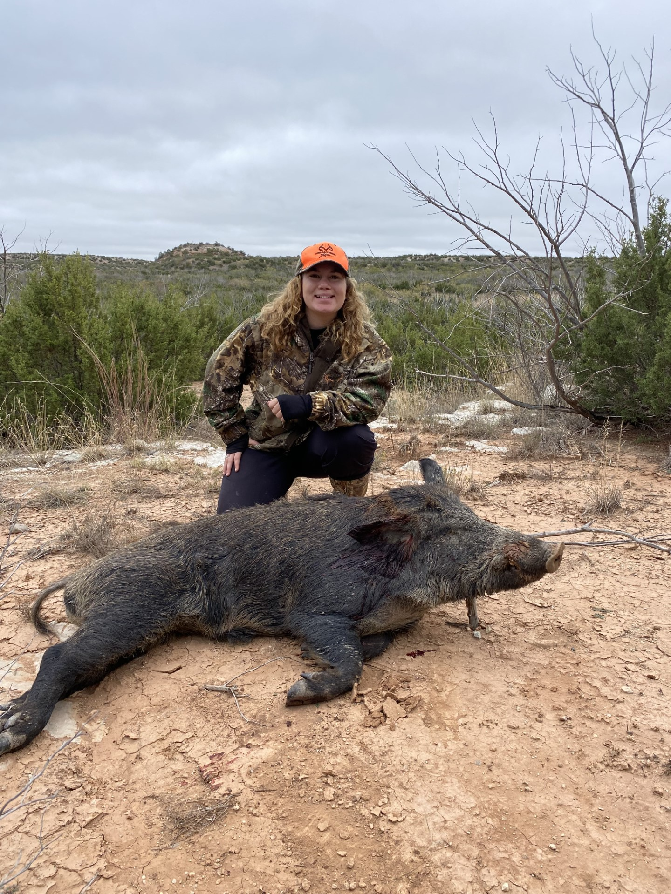
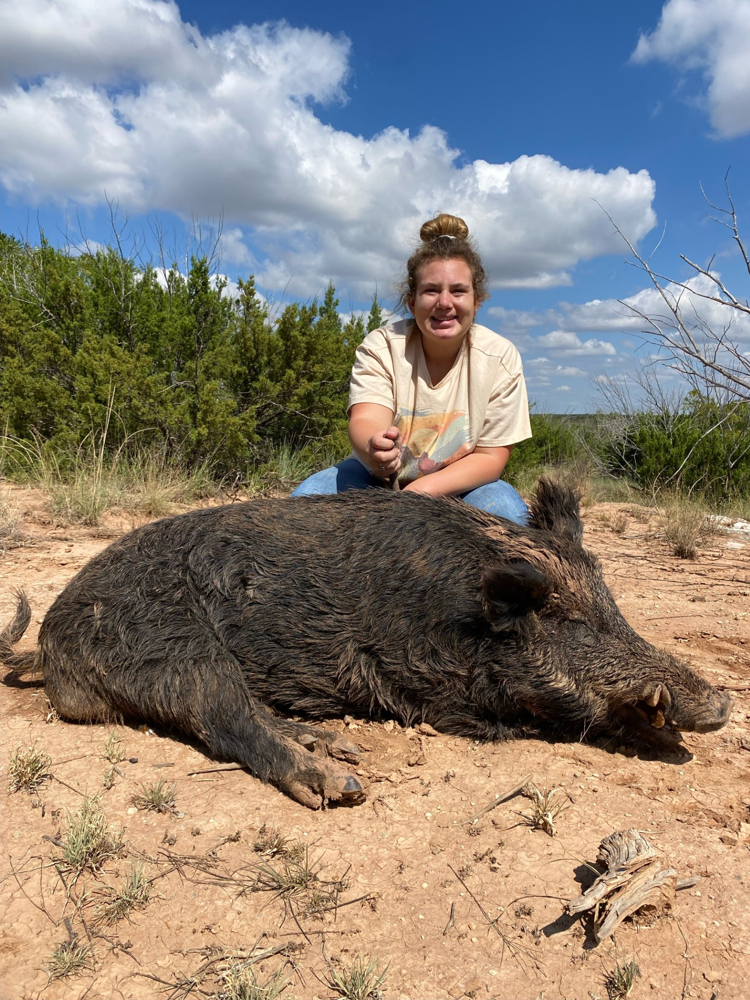

What You'll Learn Here
This website expands on the growing issue of feral hogs by explaining what they are, where they originated, and why their rapid reproduction and behavior make them a serious invasive species. It examines the extensive environmental, agricultural, and economic damage caused by feral hogs, emphasizing the widespread impact on ecosystems, farmland, and communities. The site also discusses why regulated hog hunting is an important population management tool that helps protect natural resources and reduce destruction. In addition, it provides an overview of common methods for hog hunting and control while emphasizing the importance of safety, legality, and ethical practices. Finally, the website addresses common myths and misconceptions about feral hogs and hog hunting, using factual information to promote a better understanding of the issue.
About Feral Hogs - Know the Animal

- Origins and Spread: Where feral hogs came from and how they became widespread across the United States.
- Biology and Behavior: Their rapid reproduction rates, intelligence, adaptability, and survival instincts.
- Why They're Invasive: How their traits allow them to outcompete native wildlife and disrupt ecosystems.
Damage Caused by Feral Hogs - The Real Cost

- Environmental Impact: Destruction of native plants, soil erosion, water contamination, and harm to wildlife habitats.
- Agricultural Losses: Crop destruction, damage to fences and land, and threats to livestock.
- Economic Consequences: Financial strain on farmers, landowners, and local communities due to repair and control costs.
Why Hog Hunting Is Important - The Ethical Argument

- Population Control: Hunting as a necessary tool to manage overpopulation.
- Protection of Resources: Reducing damage to farmland, ecosystems, and public lands.
- Responsible Wildlife Management: The role of regulated hunting in conservation efforts.
Hog Hunting Methods - How It's Done

- Common Techniques: Trapping, night hunting, use of thermal equipment, and other legal methods.
- Safety Practices: Proper firearm handling, awareness of surroundings, and hunter education.
- Legal & Ethical Guidelines: Following state regulations and promoting humane harvesting practices.
Myths & Misconceptions - Clear the Air

- “Hogs Are Native” Myth: Clarifying their non-native status in the U.S.
- “Hunting Makes the Problem Worse” Claim: Addressing misconceptions about population control.
- “Feral Hogs Are Basically Farm Animals” Myth: Explaining the difference between domestic pigs and feral hogs, including behavior, ecological impact, and why they are considered invasive wildlife rather than livestock.